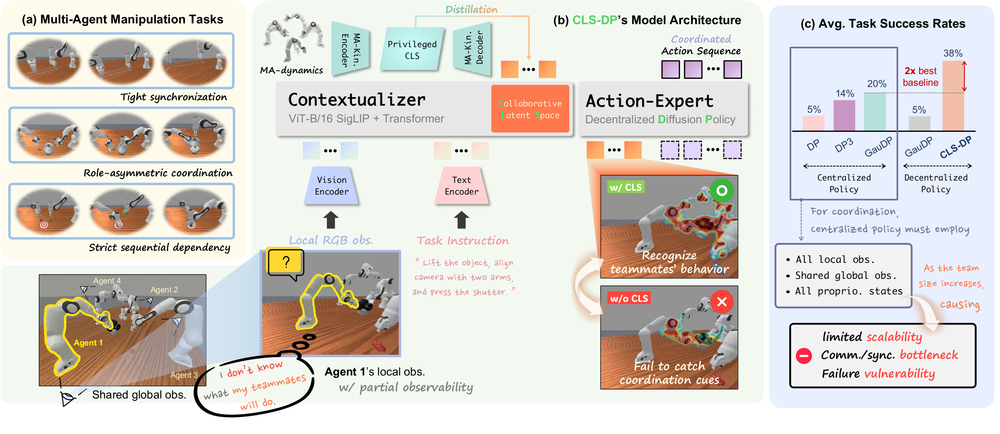
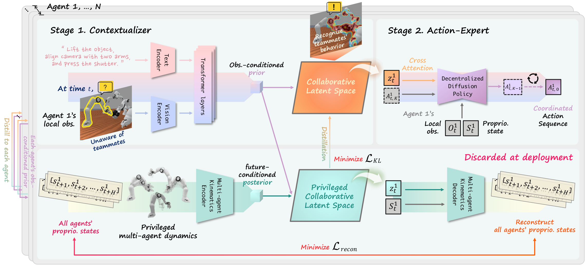
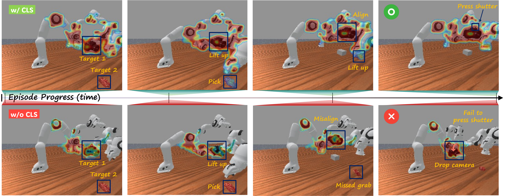
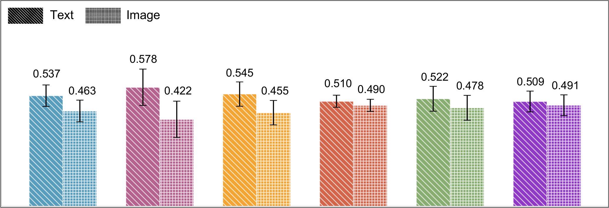
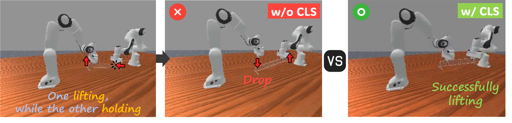
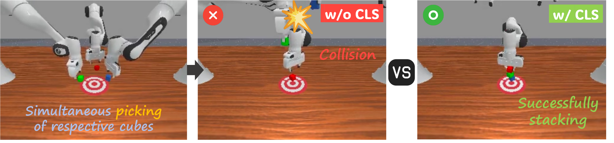
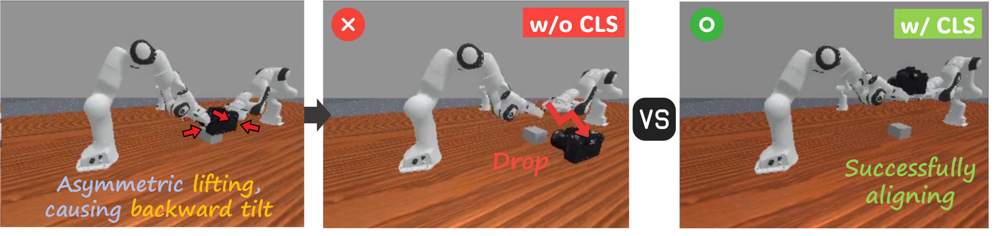

CLS-DP — a Collaborative Latent Space–conditioned Diffusion Policy that enables
implicit coordination among multiple arms under partial observability,
without shared views, global state, or communication.

Multi-arm manipulation demands precise spatiotemporal coordination, yet many centralized approaches scale poorly as team size increases. To address this, we propose CLS-DP, a decentralized multi-agent framework that enables implicit coordination under partial observability without shared global views, explicit state information, or inter-agent communication.
Under the centralized training and decentralized execution (CTDE) paradigm, CLS-DP distills privileged multi-agent dynamics into a latent space. At deployment, each agent infers a collaborative latent from its local RGB observation and a shared task instruction; it then conditions the diffusion denoising process on this latent. This design enables implicit coordination with a per-agent cost independent of team size.
Across six RoboFactory benchmark tasks spanning two to four agents, CLS-DP achieves a 38% mean success rate, outperforming the best centralized baseline (20%) and a decentralized ablation without the collaborative latent (9%). It also maintains superior parameter efficiency across all agent configurations. Attribution maps show that an agent conditioned on the collaborative latent places high attribution on the joints and grippers of both itself and its teammates throughout execution, suggesting that the learned latent efficiently encodes collaborative dynamics from local observation.
A CVAE-based contextualizer distills privileged multi-agent joint trajectories into an observation-conditioned latent that captures prospective collaborative dynamics.
At inference, each agent acts from only its local RGB view and a shared instruction — no global views, no explicit state, no communication.
Per-agent computational cost stays constant as team size grows, yielding the best success-rate-per-parameter across 2–4 agents.

Training proceeds in two stages. Stage 1 trains the contextualizer with privileged multi-agent information: a multi-agent kinematics encoder forms a residual posterior from future joint trajectories, and a decoder reconstructs those trajectories from only the agent's own state plus the latent — verifying that the latent truly carries teammates' dynamics. Stage 2 freezes the contextualizer and trains a per-agent diffusion action-expert conditioned on the latent sampled from the prior. At deployment, each agent samples its collaborative latent from local observation and runs the reverse denoising process — instantiating a decentralized policy as the marginal over the latent.
Average success rate (%) across six RoboFactory tasks over 100 unseen episodes.
CLS-DP nearly doubles the best centralized baseline while remaining fully decentralized.
| Method | Lift Barrier |
Place Food |
Stack Cube (2) |
Camera Align. |
Stack Cube (3) |
Take Photo |
Total |
|---|---|---|---|---|---|---|---|
| Centralized Policies | |||||||
| DP | 9 | 12 | 6 | 3 | 0 | 0 | 5 |
| LargeDP | 60 | 12 | 4 | 29 | 0 | 0 | 18 |
| 2D Dense Policy | 3 | 2 | 0 | 0 | 0 | 9 | 2 |
| DP3 (XYZ) | 30 | 21 | 1 | 3 | 0 | 9 | 11 |
| DP3 (XYZ+RGB) | 31 | 25 | 1 | 18 | 0 | 11 | 14 |
| 3D Dense Policy | 28 | 18 | 0 | 0 | 0 | 7 | 9 |
| Global GauDP | 72 | 15 | 2 | 26 | 0 | 3 | 20 |
| Decentralized Policies | |||||||
| Local GauDP | 3 | 12 | 0 | 15 | 0 | 2 | 5 |
| Ours w/o CLS | 14 | 5 | 14 | 7 | 8 | 3 | 9 |
| CLS-DP (Ours) | 61 | 43 | 39 | 55 | 20 | 8 | 38 |
Success rate (%) per parameter count (M) — higher is better.
CLS-DP dominates across all team sizes.
| Method | 2 Agents | 3 Agents | 4 Agents |
|---|---|---|---|
| DP | 0.0693 | 0.0092 | 0.0000 |
| LargeDP | 0.0351 | 0.0152 | 0.0000 |
| GauDP-G | 0.0395 | 0.0166 | 0.0037 |
| GauDP | 0.0068 | 0.0035 | 0.0009 |
| CLS-DP+K (Ours) | 0.2013 | 0.1124 | 0.0186 |
| CLS-DP (Ours) | 0.2056 | 0.1148 | 0.0190 |


Without the collaborative latent, decentralized agents exhibit distinct coordination breakdowns. CLS-DP conditioned on the collaborative latent successfully resolves each.



@inproceedings{park2026clsdp,
title = {Distilling Collaborative Dynamics into Latent Space for Implicit
Coordination in Decentralized Multi-Agent Manipulation},
author = {Park, Chanyoung and Yoon, Minsung and Jeong, Andrew and Yoon, Sung-eui},
booktitle = {IEEE/RSJ International Conference on Intelligent Robots and Systems (IROS)},
year = {2026}
}